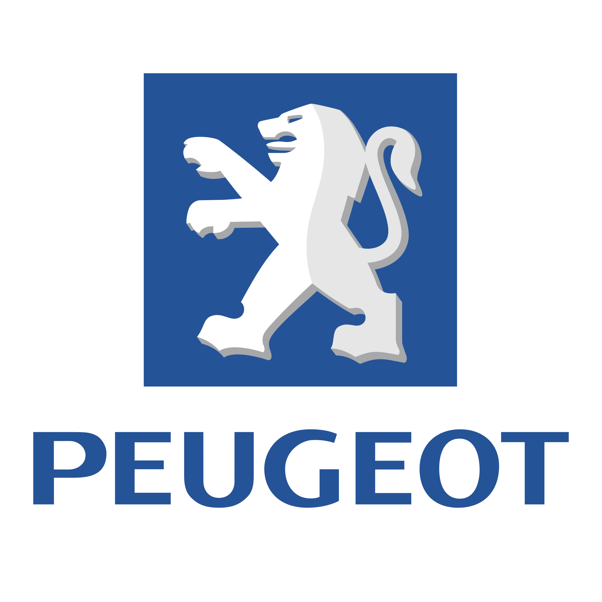

Historia marki Peugeot
Początki przemysłu
Peugeot powstał w 1810 roku jako rodzinne przedsiębiorstwo produkujące stalowe narzędzia i młynki. Dopiero w 1889 roku Armand Peugeot zaprezentował pierwszy pojazd parowy który zapoczątkował motoryzacyjną historię marki
W kolejnych latach Peugeot zyskał reputację innowatora wprowadzając nowoczesne rozwiązania techniczne i eleganckie wzornictwo
Rozwój motoryzacji
Na początku XX wieku marka stała się symbolem francuskiej motoryzacji Samochody Peugeot wyróżniały się trwałością komfortem i przemyślanym designem Model L76 był jednym z pierwszych samochodów wyścigowych osiągających ponad 160 km/h
W latach 60 i 70 firma rozwinęła gamę pojazdów miejskich które stały się ikonami na europejskich drogach
Nowoczesność i transformacja
W XXI wieku Peugeot połączył tradycję z innowacją tworząc auta o nowoczesnych liniach wydajnych napędach i inteligentnych systemach pokładowych Dzisiejszy lew w logo symbolizuje siłę elegancję i technologię
Modele Peugeot – elegancja i technologia
Peugeot 308 – kompakt klasy premium
Nowy Peugeot 308 zachwyca dynamicznym wyglądem i precyzyjnym prowadzeniem Dostępny w wersjach benzynowych diesla oraz hybrydowej łączy elegancję z funkcjonalnością
Wnętrze wyposażono w system i-Cockpit z cyfrowym wyświetlaczem 3D i kompaktową kierownicą co zapewnia wyjątkowy komfort jazdy
Peugeot 508 – francuska limuzyna
Model 508 to kwintesencja stylu i luksusu Smukła sylwetka liftbacka i wersja kombi SW oferują zarówno przestrzeń jak i sportowy charakter Hybrydowy napęd plug-in pozwala na jazdę w trybie w pełni elektrycznym
We wnętrzu znajdziemy najwyższej jakości materiały ambientowe oświetlenie oraz zaawansowany system audio Focal
Peugeot 408 – innowacyjny fastback
Nowy 408 to połączenie elegancji coupe i praktyczności hatchbacka Wyjątkowa linia nadwozia i aerodynamiczny kształt wyróżniają go spośród konkurencji Napęd hybrydowy plug-in gwarantuje niskie zużycie paliwa i doskonałe osiągi
To samochód zaprojektowany dla osób które cenią design i technologię w codziennej jeździe
Peugeot 208 i 607 – klasyka i nowoczesność
Peugeot 208 to nowoczesny miejski hatchback o wyrazistej sylwetce Dostępny również w wersji elektrycznej e-208 zapewnia cichą i dynamiczną jazdę po mieście
Model 607 był natomiast luksusową limuzyną produkowaną w latach 1999–2010 Do dziś stanowi przykład komfortu i solidności francuskiej inżynierii
Najważniejsze cechy modeli Peugeot
- 🦁 Wyrazisty design z motywem lwa
- 🇫🇷 Francuski design
- 🚘 Precyzyjne prowadzenie i komfort podróży
Peugeot w motorsporcie
Rajdy i wyścigi
Peugeot 205 T16 zdobył dominację w rajdach WRC a modele 905 i 908 HDi FAP odnosiły sukcesy w Le Mans Marka pokazała że francuska technologia może rywalizować z najlepszymi
Połączenie lekkości mocy i aerodynamiki uczyniło z Peugeota legendę motorsportu
Powrót z modelem 9X8
Współczesny Peugeot 9X8 to samochód wyścigowy nowej ery bez tylnego skrzydła ale z zaawansowaną aerodynamiką i napędem hybrydowym o mocy ponad 700 KM
Jego debiut w mistrzostwach FIA WEC symbolizuje odwagę i wizjonerskie podejście marki
Motorsport jako źródło innowacji
Doświadczenia z torów wyścigowych trafiają do aut seryjnych w postaci lepszych hamulców układów zawieszenia i inteligentnych systemów trakcji
Peugeot łączy emocje z technologią czyniąc jazdę bardziej precyzyjną i ekscytującą